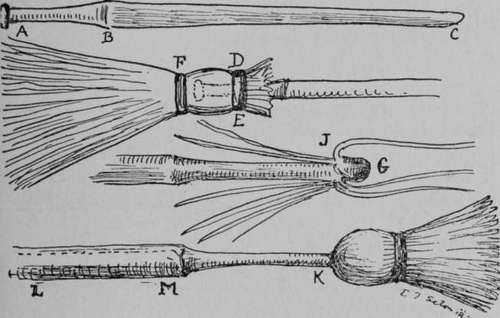

Woodman's Lantern
Description
This section is from the book "The Book Of Woodcraft", by Ernest Thompson Seton. Also available from Amazon: The Book of Woodcraft.
Woodman's Lantern
When nothing better is at hand, a woodman's lantern can be made of a tomato can. Make a big hole in the bottom for the candle, and punch the sides full of small holes, preferably from the inside. If you have a wire to make a hanger, well and good; if not, you can carry it by the bottom. This lets out enough light and will not go out in the wind. If you want to set it down, you must make a hole in the ground for the candle, or if on a table, set it on two blocks. (cut on next page).
It was windy as well as dark, and matches did very little good. So back we went to the cabin. The ranger then picked up an old tomato can, punched a hole in the side, thrust a candle up through the hole, lighted it, and took the can by the disk which had been cut from the top. The whole thing was now a boxed light, shining ahead like a searchlight, and the wind did not affect it at all! I've been camping, as you know, for thirty years, but this little trick was new to me. Perhaps it is new to you." H. G.
Still another style, giving a better light, is made by heating an ordinary clear glass quart bottle pretty hot in the fire, then dipping the bottom part in cold water; this causes the bottom to crack off. The candle is placed in the neck, flame inside, and the bottle neck sunk in the ground.
Another style is described in a recent letter from Hamlin Garland:
"Apropos of improved camp lights, I had a new one 'sprung on me,' this summer: A forest ranger and I were visiting a miner, about a mile from our camp. It came on dark, pitch dark, and when we started home, we could not follow the trail.
Camp Loom And Grass Mats
The chief use of the camp loom is to weave mats for the beds of grass, straw, hay, or, best of all, sedge. I have made it thus:
A 3-foot cross-bar. A is fast to a small tree, and seven feet away, even stakes are driven into the ground 8 inches apart, each 3 feet out of the ground.
Five stout cords are tied to each stick, and to the crossbar, keeping them parallel. Then, between each on the cross-bar is attached another cord (four in all) the far end of which is made fast to a loose cross-bar, B.
One fellow raises the loose cross-bar B, while another lays a long bundle of grass tight in the corner C. Then B is lowered to D, and another roll of grass or sedge is tucked in on the under side of the stake cords. Thus the bundles are laid one above and one below, until the mat is of the the required length. The cords are then fastened, the cross-bars removed, and the mat, when dried, makes a fine bed. When added to the willow bed, it is pure luxury; but lawful, because made of wildwood material.
Navaho Loom
A profitable amusement in camp, is weaving rugs or mats of inner bark, rags, etc., on a rough Navaho loom.
The crudest kind, one which can be made in an hour is illustrated on next page. I have found it quite satisfactory for weaving rough mats or rugs. (A and B) are two trees or posts. (C) is the cross piece. (D) is the upper yarn-beam, wrapped its whole length with a spiral cord. (E) is the lower yarn-beam, similarly wrapped. (F F) are stout cords to carry the frame while the warp is being stretched between the yarn-beams. (67 67) is a log hung on for weight. (H H) is a round stick fastened between the yarns, odds on one side, evens on the other, to hold the yarns open until the rug is all done, but about one inch when it is drawn out.
Now with a needle, the yarns or strings for the warp are stretched from one yarn-beam to another, as a continuous string. The exact method is shown on a larger scale in the upper figure (I I) The batten or spreader (J) is a piece of light wood two inches wide and one half inch thick, with square edges, but thin sharp- point, and about as long as the yarn beam.
Now we are ready to begin. Run the batten between the yarns under the sticks (H H.) Then drop it to the bottom and turn it flatwise, thus spreading the yarns apart in two rows. Lay a line of soft bark, rags, or other woof in this opening on top of the batten, making sure that it projects a couple of inches at each end. Double these long ends around the strong cords (F F) then back along themselves. Now draw out the spreading batten and press the woof down tight.
Run the batten through alternate threads again, but the reverse way of last, and this time it goes more slowly for the lack of a guide rod.* Lay a new line of woof as above. When the rug is all finished except the top inch or more, draw out the rod (H H) and fill the warp to the top.
This is done much more quickly by help of a heald-rod, that is, a horizontal stick as wide as the blanket, with every other strand of the warp loosely looped to it by a running cord near the top. When this rod is pulled forward it reverses the set of the threads and allows the batten to drop in at once.
Finally cut and draw out the spiral cords on each yarn-beam. This frees the rug, which is finished, excepting for trim and binding, when such are desired.
Those who want full details of the best Navaho looms and methods will find them in Dr. Washington Matthew's article on Navaho Weavers, 3d Annual Report, Bur. of Ethnology, 1881-2. Washington 1884.
Camp Rake
A camp rake is made of forked branches of oak, beech, hickory, or other hard wood, thus: cut a handle an inch thick (B C) and 4 feet long, of the shape shown. Flatten it on each side of A, and make a gimlet-hole through. Now cut ten branches of the shape D E,each about 20 inches long. Flatten them at the E end, and make a gimlet-hole through each. Fasten all together, 5 on each side of the handle, as in F, with a long nail or strong wire through all the holes; then, with a cord, lash them together, spacing them by putting the cord between. Sharpen the points of the teeth, and your rake is ready.
Camp Broom
There are two ways of making a camp broom. First, the twig broom. This is easily made as follows: cut a handle an inch thick, and shape it to a shoulder, as in A B C. Lash on birch or other fine twigs, one layer at a time, until sufficiently thick, as D E. Now at F, put a final lashing of cord. This draws the broom together, and binds it firmly to the handle. Trim the ends even with the axe, and it is ready for use.
The other style is the backwoods broom. This was usually made of blue-beech or hickory. A 4-foot piece of a 4-inch green trunk is best. Shavings 18 inches long are cut down, left attached at J, and bent back over the end until there is a bunch of them thick enough; when they are bound together with a cord and appear as in K. Now thin down the rest of the handle L M, and the broom needs only a little drying out to be finished.
Building A Boat
Most camp sites are selected with a view to boating; certainly no camp is complete without it.
Winter is a good time to build a boat, if you have a workshop big enough to hold it.
The simplest kind of a craft is the best to start with. Get two boards, smooth and with as few knots as possible, 15 in. wide, and 15 ft. long; about 50 sq. ft. of tongue and groove flooring; a piece of 2 x 6 in. scantling, 15 in. long; and plenty of 3-in. nails.
begin by beveling the stern post to an edge (a). Set this on the ground and nail two of the boards to it, one on each side (b).
At a point about 7 feet from the bow, put in a temporary-cross piece 3 1/2 ft. long (c), which can have the ends either plumb, or spreading wider toward the top.
Around this, bend the two side boards till their stern ends are but 3 ft. apart. Nail on an end piece (d e) to hold them there.
Now cut a strip of 1 x 2 in. stuff, and nail it inside along the lower edge of the side board, so as to give a double thickness on which to nail the bottom.
Turn the boat upside down and nail on the tongue and groove stuff to form the bottom.
Now, turn her over, remove the shaping board, put in the necessary stern and mid seats (see dotted lines), nail on a piece of board to double the thickness where the rowlocks are needed - each about 12 inches abaft the mid seat, add rowlocks, and the carpenter work is done.
Tar all the seams, caulking any that are gaping, and when the tar has set, paint her inside and out. As soon as this is dry, she is ready for the water.
She may leak a little at first, but the swelling of the wood has a tendency to close the seams.
This is the simplest form of boat. Great improvement can be made by making the sides deeper, and cutting the lower edge so that the bottom rises at bow and stern, also by setting the stem or bow-post at an angle, and finally by adding a keel.
If you cannot get a 15-in. board, use two or more narrow ones. Their joints can be made tight by caulking.
A Dugout Canoe
Basswood, tulip wood, and white pine were the favorite woods for a dugout canoe, though no one made one when they could get birch bark. The method of making was simple but laborious. cut your log to the exact shape desired on the outside, then drive into it, all along the side, thin wire nails, an inch long, so that there should be one every two feet along the side, and more on the bottom. Now, hollow out the inside with adze or axe, till the nail points are reached. Sometimes longer nails were used for the bottom. The wood at bow and stern was, of course, much thicker.
Camp Horn
I wish every Camp would get a good camp horn or Michigan lumberman's horn. It is about four feet long, has a six-inch bell-mouth, and is of brass. Its sounds are made by mouth, but a good player can give a tune as on a post horn. Its quality is wonderfully rich, mellow and far-reaching, and it can be heard for three or four miles. It is a sound to stir the echoes and fill the camp with romantic memories.
Sleep Outdoors
As you drive through New England in the evening, summer or winter, you must notice a great many beds out of doors, on piazza or on sun-deck. Many of these are beds of persons who are suffering from lung trouble. They have found out that this is the way to cure it. Some of them are the beds of persons who fear lung trouble, and this they know is the way to evade it.
Take, then, this lesson: If possible, every brave should sleep out of doors as much as possible; not on the ground, and not in the wind, but in a bed, warm, dry, and rainproof, and he will be the better for it.
The Gee String Camp
Whenever complete isolation from summer resorts or mixed company make it permissible, we have found it well to let the fellows run all day during warm weather, clad only in their shoes and their small bathing trunks, breech-clout or gee-string. This is the Gee-String or Indian Camp. Its value as a daily sun bath, a continual tonic and a mentally refreshing hark back to the primitive, cannot be overestimated.
Continue to:
Tags
bookdome.com, books, online, free, old, antique, new, read, browse, download